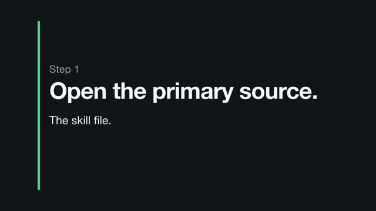
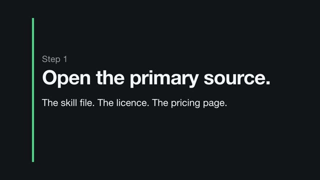
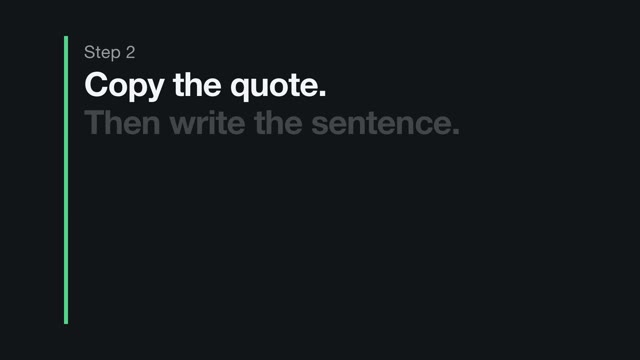
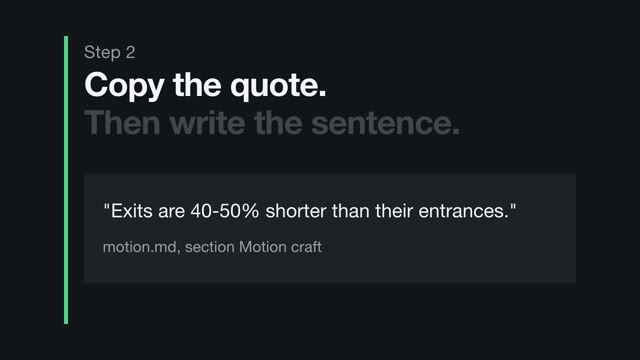
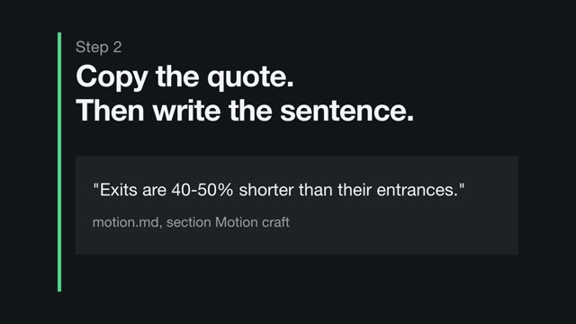
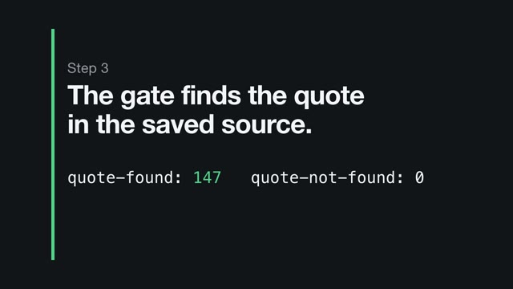
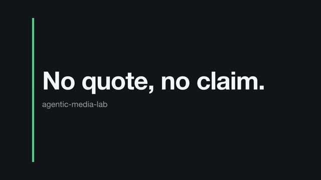

01
Answers
A question in your own words, routed to an approach, the records behind it, a guide page and the risk.
Lab / clipcheck-fix-loop
A knowledge hub for developers who make video and images with a coding agent. Claude Code first, Codex second. Every claim carries a verbatim quote from a source someone opened. Unknown is a valid value. Failures are published.







every rule cites the hub record it comes from
| Finding | Time | Rule and measurement | Source |
|---|---|---|---|
| E1 error | 2.967-3.167 s 6 frames from #89 | empty-frames No frame mid-clip without scene content 3 stretch(es) mid-clip with no scene content on screen (only fixed elements remain); a frame counts as empty under 0.25% of pixels lit, this clip usually has 5.94% Fix: Overlap the outgoing and incoming scene, or hold one element through the cut. Check the exact frames listed. |
Run note run here once: three scene changes passed through a frame showing only an accent bar; a blind reviewer flagged it |
| E2 error empty-frames. Same rule and source as E1. | 7.967-8.000 s 1 frame, #239 | ||
| E3 error empty-frames. Same rule and source as E1. | 13.000-13.033 s 1 frame, #390 | ||
| W1 warning | 14.0 s | stray-numbers No numbers on screen that the contract does not list numbers on screen that the contract does not list: 126 (text is read every 0.5 s, so other values may pass unseen) Fix: A count-up shows values that are not true on the way to the real one. Reveal the figure instead of counting to it. |
Run note run here once: a counter animated through 54 and 112 on the way to 147, on a line reporting a verification result |
Loading the fix-loop result...
01 Answers
You get a route: the approach, the records behind it, a guide page, and the risk in one line.
Or start from a question readers asked
01
A question in your own words, routed to an approach, the records behind it, a guide page and the risk.
02
Tools, models and sources, plus guide pages and skills. Each record shows a trust badge, the date it was last checked, and its claims with the verbatim quote and locator. Until this page exists, records open from Answers.
03
Worked examples run here with a threshold fixed before the run, and clipcheck, a contract checker for agent-made video: the brief becomes data and the rendered MP4 is measured frame by frame.
04
What turned up where practitioners talk: communities, forges, registries, papers, talks. Each item ends as a new record, an updated record, a dispute, or no material.
Loading the fact-check figures...